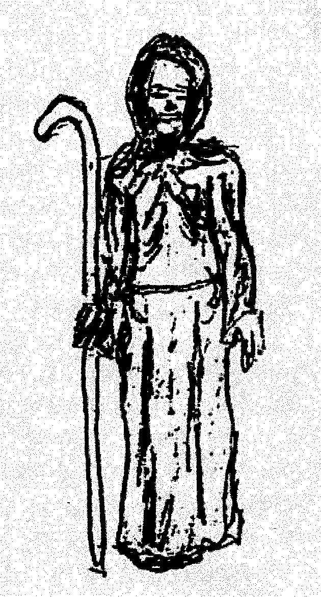
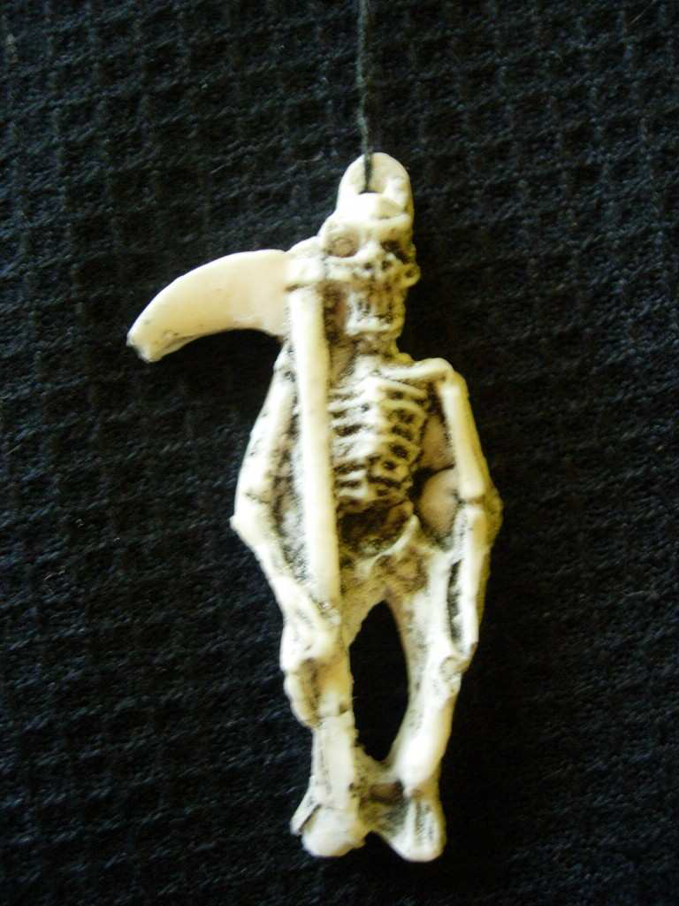
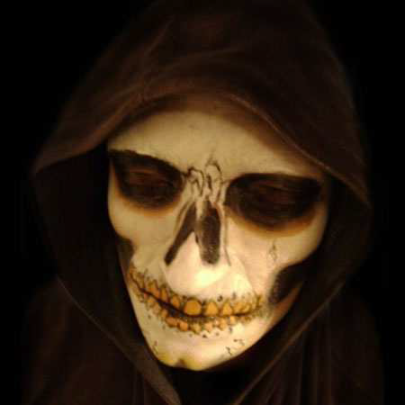

LEYENDAS DE SAN LA MUERTE

Como Leyenda, hay varias, las que dan origen al “Santoral Profano” correntino. Cada
indio que se llevo una imagen, tallada por sus manos, tubo una conciencia distinta de
su santo, o de su dios o de su protector.
En el Culto a San La Muerte , las leyendas son varias, aquí quiero reseñar las que
han llegado a mis oídos. Estas leyendas pueden ser distintas unas de otras o
simplemente ser la continuación, en distintos tiempos de una misma historia.
Cuenta la leyenda que la tribu de los Guacarás que tuvo
su asentamiento en lo que es hoy Santa Ana de los
Guacarás, que cuando se fueron los Jesuitas, los indios
tomaron las imágenes de la iglesia, en una de ellas había
un tríptico en donde estaba representaba la Tentación de
Jesús en el pináculo del Templo de Salomón. Con los
personajes de: Jesús, El Diablo y la Muerte y la victoria
de la Muerte a cambio de un traspié de Jesús. Los indios
se repartieron el tríptico formado por tres tablas talladas
por ellos y de esa manera se fueran y cada uno por su lado
le siguió efectuando cultos pidiéndoles protección y todas
las gracias que necesitaban. Esto dio origen a lo que hoy
se conoce San Diablo (la tabla con la imagen del Diablo);
a Jesús que no sufrió demasiadas transformaciones y a
San la Muerte (también de la tabla con la talla de la
Muerte). Luego cuando vuelven los salcedotes a ejercer
los oficios religiosos, estas santificaciones se adaptaran
en las capillas cristianas.
LEYENDA SOBRE: TUPA
Los españoles quedaron perplejos cuando los indios que habitan este lugar antes de ir
a realizar sus ocupaciones se encomendaban a los que ellos denominaban un fetiche o
talismán que representaba a un hombre descarnado en posición fetal o sentado al cual
los indígenas le llamaban ÑANDERU GUAZU o Tupa y que muchos siglos antes de
que los españoles descubriesen América se cree que según la adición oral fue en el
año 800 de nuestra era lo que seria aproximadamente hace 1200 años y ateniéndonos
siempre como fuente la tradición oral Dios Padre se le hace presente a un cacique
guaraní de aspecto flaco y descarnado se le revela como TUPA o ÑANDEERU
GUAZU y se sienta de cuclillas a conversar con el cacique y le cuenta que en el cielo
hay una pieza llena de velas, una mas grandes y otras mas pequeñas, todas
encendidas y le explica que las velas representan la vida y que cuando se apagaba el
hombre moría y su alma era arrancada de su cuerpo para ser llevado a su juicio. De
ahí que en las estampitas actuales aparece con la guadaña, ya que en las primeras
tallas aparece en posición fetal o sentado, y le dice que debía encomendarse el
cacique con todo su pueblo tanto en vida como para poder tener una buena muerte, de
allí nace el nombre Señor De La Buena Muerte.
LEYENDA SOBRE: DIOS ENVIANDO EL MANDATO DIVINO
Cuenta la leyenda que existió una vez, un rey que fue famoso por ser justo en
administrar justicia. Este rey muere y va al cielo. En representación de Dios, éste le
reconoce lo justo que había sido en la tierra cuando administraba justicia, y le pide
que lo ayude en una labor en la cual él iba a ser idóneo para esa tarea, le encomendó
el cuidado de la vida y de la muerte de los humanos, Dios le dijo: “¿Ves todas esas
velas encendidas?, pues esas velas son la vida de los hombres de la tierra. Tu labor
será que, cuando una de las velas se termine de consumir, tendrás que bajar e ir a
buscar su alma para conducirla ante mi presencia. Mientras las velas estén ardiendo
esas personas están vivas, una vez que se haya consumido, es cuando se acaba el
tiempo para esa persona, como ves, hay velas mas grandes y velas mas pequeñas, no
todos tiene el mismo tiempo de vida allí en la tierra”. Así por orden divina se
convirtió en el ayudante de Dios para controlar la existencia de los hombres. Sus
devotos se encomiendan a él en la vida y para que los proteja en la hora de la muerte.
LEYENDA SOBRE: EL BONDADOSO SEÑOR SAN LA MUERTE
En los Esteros de Iberá se cuenta otra leyenda, o que dije, otra parte de una misma
leyenda que forma la historia de este Santito: Cuentan los lugareños que en la región,
hace 150 años aproximadamente, había una prisión en donde estaban albergados los
leprosos. A estos, por miedo al contagio, los tenían apartados de los demás reclusos,
en una edificación alejada. En el pueblo existía un “Payé” (medico brujo), unos dicen
que fue un monje Franciscano o un monje Jesuita que cuando Carlos III de España
los expulso de la región, se quedó en el lugar para ayudar a los indígenas. Este Payé
era conocido por su poder de curación, a través de la administración de yuyos,
brebajes, curaciones “de palabra” y oraciones, la administración de una “agua
curativa “su gran amor al prójimo, en cual abarcaba también a los leprosos cuando
éste se adentraba en sus celdas para ofrecer agua a los enfermos en la culminación de
sus vidas por medio de la enfermedad.
Este monje era poco para toda la comunidad. Sus tareas se debían multiplicar para dar
auxilio a todos los que requerían de su ayuda para curar males del cuerpo como así
también males espirituales, o bien sacarle “algún daño” a una persona que había sido
victima de algún “ojeo”, por otra mal intencionada. El Payé se hacia su tiempo para correr hasta la orilla del río (o Laguna), sentarse bajo algún árbol frondoso, ponerse
en cuclillas, y meditar mirando correr el agua.
Todo seria igual, con la monotonía de siempre, ayudaba a las personas del poblado y
de los que venían de la selva; llevando el agua para calmar la sed de los enfermos en
el leprosarío; tomándose el tiempo para descansar su delgado cuerpo a la sombra de
un árbol en la orilla del río. Hasta que, llegaron al lugar nuevamente los sacerdotes
cristianos, que volvían a retomar la empresa comenzada por los misioneros.
Los sacerdotes al enterarse de la presencia del Payé, confabulan con las autoridades y
hacen poner preso a éste, y lo encierran en una celda con los leprosos. El Payé, sin
oponer resistencia se deja conducir, que lo encierran. Pero en protesta hace ayuno y
de pie. Apoyado en un callado (bastón largo que utilizan los pastores o los viajeros
para ayudarse a caminar), de pie, hasta que la muerte le llega en un momento. Nadie
se dado cuenta de su muerte hasta luego de un tiempo prolongado cuando abren la
puerta de su celda y lo encuentran muerto, de pie con su túnica negra, apoyado en el
callado (que tenia forma de L invertida) sus carnes consumidas, era solo su esqueleto
cubierto por la piel.
El apodo de Señor La Muerte puede venir, porque Payé, se ocupaba de las personas
con lepra, (que en esa época tener esta enfermedad, la cual no tenía cura, era una
sentencia de muerte segura).
LEYENDA SOBRE: LA MISIÓN DEL SEÑOR SAN LA MUERTE
Entre los nativos donde se originó este mito, los personajes más respetados
socialmente eran los Caciques y los brujos o curanderos. Su ciencia se transmitía a
una persona por él elegida. El Chamán debía cumplir la altísima misión encomendada
por Tupá (Dios), de administrar la vida y la muerte de sus contemporáneos, mediante
la realización de curaciones o daño. Cuando envejecía, debía elegir entre los jóvenes
de su tribu a quien consideraba merecedor de cumplir tan alto designio. Entonces el
elegido debía internarse en el bosque, sentarse sobre un tronco y permanecer durante
siete días sin ingerir alimentos ni agua y además aguantar el miedo a las horrorosas
apariciones que vería. Si esta prueba era superada, estaría en condiciones de ejercer
su trabajo como ayudante a Tupá.
En una ocasión, ya elegido el sucesor, el joven despide de su novia y a pesar que
estaba prohibido le revela el lugar donde cumpliría la prueba. Se interna en el monte,
elige el lugar para soportar la prueba y espera. Pasados los siete días no regresa a la
tribu. Su enamorada va en su búsqueda, y lo encuentra esquelético y muerto.
Llora desconsolada y se lleva de recuerdo una falange como reliquia. Al llegar a su
choza encuentra a su madre enferma. Entre lamentos ruega a su amado, aferrándose
al huesito, que desde el más allá sane a su madre. Sus ruegos fueron escuchados y su
madre sana milagrosamente.
Otra versión de la misma leyenda cuenta que el hijo de un cacique, joven y fuerte
estaba protegido por Yasi (La Luna), que le había enseñando a fabricar un amuleto
protector. Su madrastra era iniciada en el culto a Aña (el Diablo), envidiosa por la
suerte de Payé, por la valentía y el coraje de éste, quería todos los atributos para su
hijo. Una noche mientras dormía, su madrastra le robó el amuleto. Desde entonces
Payé que era invencible, comenzó a debilitarse corriendo peligro de muerte. Entonces
Tupá (Dios supremo de los guaraníes) le envía un ave que le revela al joven Payé lo
ocurrido y como recuperar el amuleto y recuperar su salud y gallardía. Mientras la
madrastra enloquecía de envidia.
De la misma leyenda, al sufrir deformaciones por la divulgación de boca en boca, de
generación en generación, he encontrado que los guaraníes enterraban a sus muertos
en posición fetal, porque decían que la vida volvía a reciclarse, y de esta manera la
persona se preparaba en la misma posición que tendría en el vientre de la madre para
volver a nacer. Esta posición muchos la comparan con la imagen de San La Muerte
en cuclillas o en posición fetal, asimilándose a la forma de Payé cuando iba a orillas
del río a meditar o descansar, además de ver su esmirriado cuerpo “parecido a un
esqueleto” con la capa de piel sobre los huesos. Esa Imagen con el tiempo se pudo
haber deformado por la tradición oral cuando se decía “tan flaco que es todo huesos
vestido con una capa negra, parece un esqueleto con túnica.”
Sin desdeñar otra información, los lugareños les han dicho a los recopiladores de
datos y leyendas en Corrientes y sus alrededores, que el culto a San La Muerte se
produce a partir de la expulsión de los Jesuitas de la Cuenca del Plata por orden de
Carlos III de España.
Un dato para tener en cuenta es que durante la permanencia de los
Jesuitas en la región guaraní, estos tenían una imagen de Cristo
sentado con la barbilla apoyada en las manos y dos codos apoyados
en rodillas. A este Cristo se lo llamaba Señor de la Humildad y la
Paciencia, e incluida en el santoral cristiano, venerándose el 15 de
agosto su conmemoración. Es de ahí que en algunos lugares se los
venera a San La Muerte ese día, sincretizándolo con el Señor de la
Humildad y la Paciencia.
Pero generalmente la fecha de veneración en donde los
“prometeros” les rinden culto es el día 20 de agosto.
EL AMULETO

El amuleto de San La Muerte es un eficaz “payé” (amuleto talismán).
El pueblo lo nombro su “abogado” saben que portando el “Payé”
colgado del cuello con una cadena o cordón de cobre; teniendo a la
imagen en su casa, o incrustándoselo en el bíceps, están seguros de
todo mal.
Hay Personas que hacen rasgar la piel del brazo a la altura del bíceps,
para incrustarse en el amuleto de San La Muerte hecho en un tamaño
de pequeñas proporciones.
La confección del amuleto requiere varios requisitos según el
“tallador” que lo realice y el lugar de su devoción, porque varía su
forma de consagrarlo. Los materiales que utilizaban los indios Tupí
Guaraní, era de madera blanda que abunda en la zona como ser
naranjo, palo santo o de “curupí”. Algunas veces se realizaba la
imagen de un plomo derretido de una bala extraída a “punta de facón”
de una persona que haya sido asesinada, otras veces lo hacen de
plomo simplemente; también se realiza en arcilla que es cocinada en Viernes Santo;
según dicen los mas poderosos por su fuerza milagrosa es la que se hace con huesos
humanos, especialmente de los huesos que conforman las falanges, antiguamente
eran de especial predilección por los devotos del Santito, hacer el amuleto-payé de
una falange de un niño que hubiese fallecido y que este haya sido bautizado.
A pesar que la industria haya sobrepasado el trabajo que realizaban los artesanos
talladores de imágenes, todavía se puede encontrar a alguien que se dedique a realizar
esas hermosas imágenes talladas que cada artista de impregna su estilo particular. El
artesano o tallista deberá ser consagrado a San La Muerte.
La medida de esta tallas nunca deben llegar a medir los 10 cm de altura. Para ser más
efectivo su efecto son las más poderosas las realizadas en Vienes Santo, antiguamente
cuenta los lugareños, la imagen debía ser escondida una noche en el altar de la una
iglesia católica, en ese entonces ubicada entre Saladas y San Roque, para esto el
gaucho debía forzar la entrada de la iglesia para depositar el amuleto-payé en el altar
y luego para retirarlo, el mismo quedaba con todo su poder una vez que el sacerdote
cristiano, oficializaba misa y bendecía la Santa Hostia.
Como no se podía realizar la aventura contada anteriormente, los que deseaban el
talismán, escandían la pequeña imagen en velas ahuecadas para que recibiera la
bendición 7 veces, cada una en una iglesia distinta.
CULTO A SAN LA MUERTE

El culto al “Santito Esqueleto” como cariñosamente
lo llaman, se remonta a la época en la cual el
gaucho, para perdurar en una topografía tan agreste
como la del Litoral Argentino, se veía desprotegido
en la inmensidad de la selva, y de los campos. El
pueblerino no se quedaba atrás en pedirle protección
a su “Santito”.
El culto comienza junto a la leyenda, ésta por las
mentas de los “gauchos alzados” o por los
parroquianos de las “bailantas” en donde no faltaba
oportunidad de poder demostrar el arte del manejo
del facón o del cutillo. Se decía que quien llevara el
amuleto de San La Muerte , era invencible y no
había filo de ningún arma blanca que le llegara, ni plomo de arma de fuego que lo
tocaría. Además ponían al santo al tanto de cada partida de juego que hubiese,
pidiéndole la gracia de salir ganador de la partida sobre todo si este era por dinero.
No perdían oportunidad de pedirle si alguna de las muchachas les gustaba, para que
éste se las acercara. Los pedidos eran y son diversos, a pesar que en Corrientes hay
un santo popular al que le piden todos los favores referidos al amor. San Alejo,
también estás los que le piden a San La Muerte sobre cuestiones amorosas, le piden
por problemas de salud; para protección de la casa; de las personas; de los niños; por
problemas de trabajo; de dinero; para “alejar algún daño” para el “ojeo” de personas,
campos y de animales también, es común ver un animal que tiene poco tiempo de
haber nacido con una cinta roja en el cuello, para que “corte el ojeo”.
También le piden que aleje a las personas que no son convenientes para quien lleva el
amuleto; para encontrar objetos o perdonas perdidas; para que los ladrones devuelvan
lo robado; para salir airoso de una pelea; etc. Es decir están los que le hacen pedidos
específicos y están los que le piden todo tipo de gracia, incluso le piden la muerte
para algún enemigo, que si es el tiempo que ya tiene que morir, hace que el enemigo
se vaya secando hasta morir.
Hay dos tipos de culto, uno personal y otro publico. Si es personal le rezan sus
oraciones al santo los días martes y viernes, le prenden velas de color rojas o de color
blanco y negro.
Si es para el bien está acompañado de algún crucifijo y en algunos casos la imagen
del santo está acompañada por otra de Santa Catalina.
Si a San La Muerte también le hacen algún pedido en donde está el mal para una
persona, éste esta totalmente negro y oculto de la vista de los extraños, solo el dueño
lo “atiende”. Si otra persona lo ve, perderá su fuerza milagrera.
Cundo el santo es de culto publico, este tiene su altar de la casa o en un ambiente o
cuarto destinado para él solo. Su altar siempre está adornado con claveles rojos que le
dejan las personas que le piden favores. En estos casos, cuando es de culto publico, le
encienden velas de color rojas, de color blanco-negro, o simplemente de color blanco.
Otras personas le prenden velas de color amarillo-negro.
A San La Muerte, cuando se le hacen pedidos de favores tener presente si se puede
cumplir con lo prometido y después de cumplido el pedido, llevarle o cumplir con la
promesa.
Cuando el “Santito” es para uso de una casa, y se tiene para que le abra los caminos,
proteger a los integrantes de una familia; para proteger la vivienda de posibles
ladrones; o del “ojeo” malintencionado de otras personas, basta simplemente tener
una imagen de San La Muerte vestido con un manto negro, sobre un paño de color
negro.
Cuando es para el mal; la imagen de San La Muerte, es de uso personal y esta oculto
de la vista de otras personas, únicamente lo ve su dueño para que este no pierda su
fuerza. A este le prenden velas únicamente negras o rojas.
Cuando es para el bien los pedidos se le hacen una vez que cae el sol o sea al
atardecer hasta antes de las doce de la noche. Cuando al pedido que le efectúa es para
el mal, se le hace después de las doce de la noche.
Al igual que otros santos populares del litoral, que se han
ido paganizando. San La Muerte tiene el influjo de la
culturo afro-brasileña. Por eso al santo se lo relaciona
con el Exú, entidad culturada con el Candomblé, y el
Umbanda. Con el correr de los tiempos, se fue
mixturando el culto, en el Brasil o en la costa del río
Uruguay, lindera con Brasil.
San La Muerte tuvo su mayor influencia de la cultura
del país vecino, lo mismo ocurrió con el Exú del Brasil
que recibió la influencia del culto al “Santito”.
No se sabe cual es el principio, quien influenció a quien.
De esta mixtura salió que San La Muerte también, en algunos casos, recibe comidas
como Exú cuando se le hace algún pedido, se lo venera o se le agradece el favor
recibido.